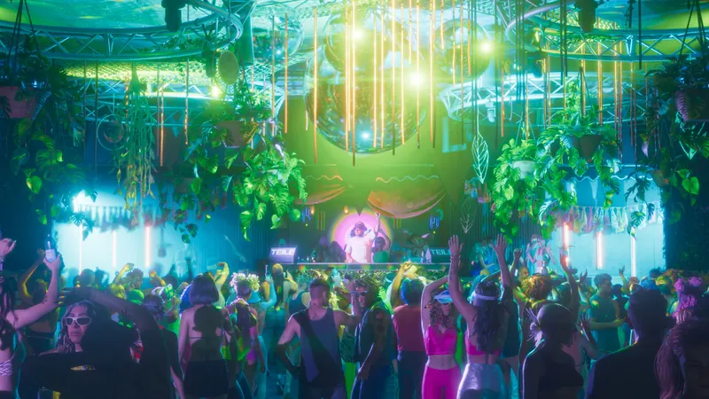

What radio stations are in GTA 6? All 22 and the secret one
Short answer
GameSpot counts 22 stations from playing the game, plus a secret one, The Vault Radio. Rockstar officially revealed six: Flash FM, Cocoteo FM, Back Country Radio, AfroBank FM, The Chamber 106.6 and Dirty South Classics.

All 22 stations
GameSpot, which has been listening in-game since launch, counts 22 stations, the most in the series, plus a secret one. Stations marked ★ are the six Rockstar officially revealed on October 8, 2026; the rest come from GameSpot, so they rest on a single source.
| Station | Style | Hosts (per GameSpot) |
|---|---|---|
| Flash FM ★ | Pop | Robyn and Alex Consani |
| Emotion 98.3 | Soft rock (back from 2002's Vice City) | — |
| Vice City FM | '80s pop | “Weird Al” Yankovic and Brigitte Nielsen |
| Stockyard FM | Indie and dance | PinkPantheress and The Dare |
| Dirty South Classics ★ | Southern rap | Trick Daddy and Trina |
| VCRR | Modern rap | JT and DJ Stevie J |
| Honey FM | '90s R&B and soul | Chilli and T-Boz |
| Cocoteo FM ★ | Modern Latin: reggaeton, dembow, bachata | Bad Bunny (El Martillo) and RaiNao (La Gata) |
| Radio La Ola | Latin classics | Gloria and Emilio Estefan |
| Radio On-U | Laid-back rock | — |
| V-Rock | Classic rock | Lindsey Buckingham and Michael McDonald |
| The Chamber 106.6 ★ | Metal | Kerry King and Tom Araya |
| Back Country Radio ★ | Country | Morgan Wallen (MW) and Delta Dawne |
| Gloriana Blues Radio | Blues | Keith Richards and Buddy Guy |
| Leonida Jazz Radio | '70s jazz fusion | — |
| Symphony FM | Classical | Yuja Wang |
| Worldwide FM | World music and jazz (back from GTA V) | Gilles Peterson |
| CircoLoco Records Radio | Club music | Seth Troxler and Antonio Carbonaro |
| AfroBank FM ★ | African music | Burna Boy and Palms Trax |
| Kaleidoscope FM | Covers, global pop, Finnish disco | Jeremy Irons |
| WKTT | Talk radio (back from GTA IV) | Stavros Halkias |
| The Wipe | Talk show about Leonida's oddities | — |
The secret station: The Vault Radio
According to GameSpot, it unlocks once you reach Vice City: go to The Vault nightclub, roughly in the middle of the city, find a poster with a pink gas mask inside and scan it with your phone. You can then listen to the club's dance and electronic tracks.
What Rockstar announced
In its October 8 reveal, Rockstar detailed six stations and their hosts, and said GTA 6 adds on-demand podcasts for the first time, playable in vehicles or on foot through earbuds connected to the in-game phone, plus an official album, Grand Theft Auto VI: The Album, with 34 tracks.
GTABase listed 21 stations before launch without separating confirmed names from leaks; GameSpot's list comes from the released game.
Sources
- GameSpot: All GTA 6 radio stations and songs (Nov 19, 2026)
- Rockstar Newswire: The Music of Grand Theft Auto VI, In-Game Radio Stations (Oct 8, 2026)
- GTABase: GTA 6 radio stations
Written by Six Stars from the sources above, checked on November 20, 2026. Spot a mistake? Tell us via About us.